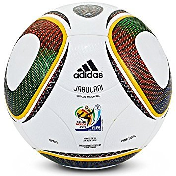

In order to score in soccer, there are several methods you can take, such as dribbling, passing, and shooting. These methods will increase the chance of scoring drastically, if done properly.
Pulisic has scored 14 goals in 34 games as a U.S. international player. He has appeared and scored at every youth level and made his senior team debut in March 2016 at age 17. He is the youngest player ever to captain the U.S. national team in the modern era.